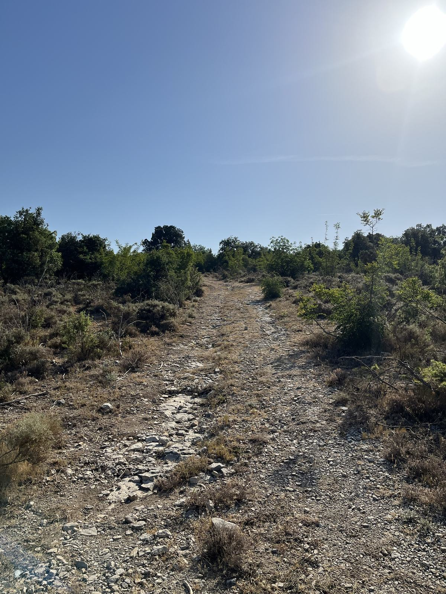
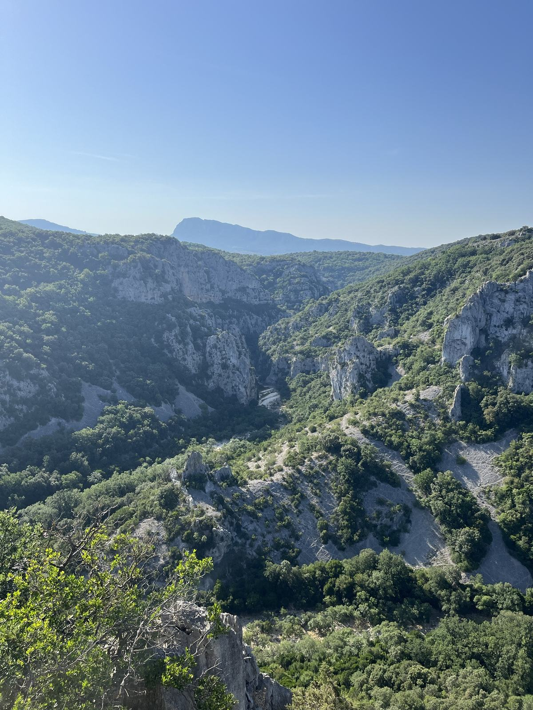
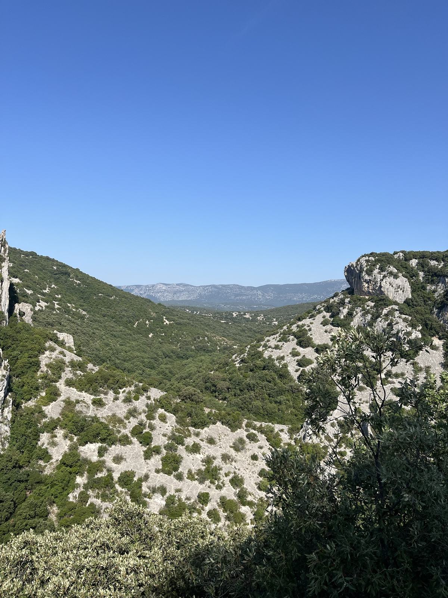
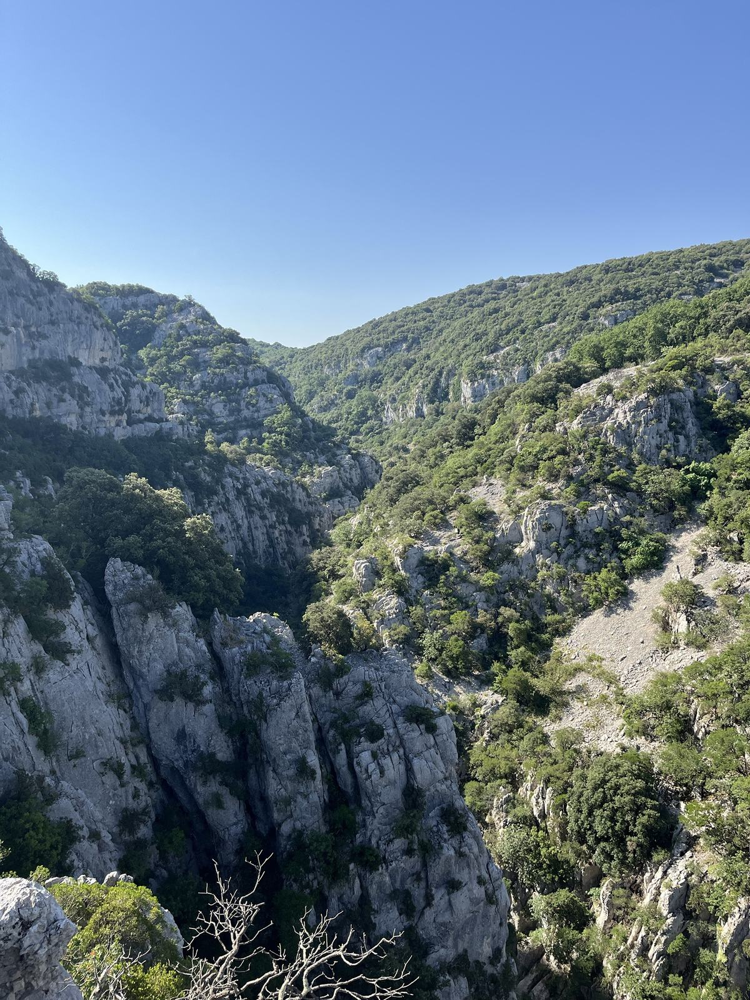
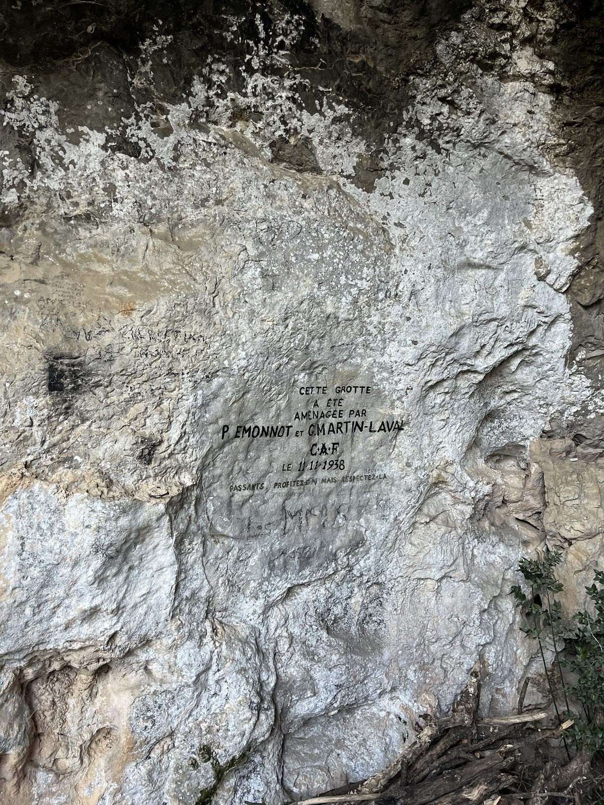
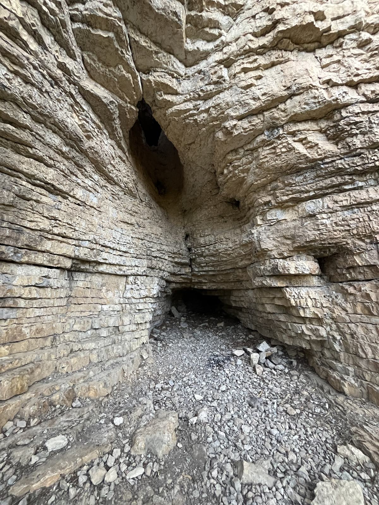
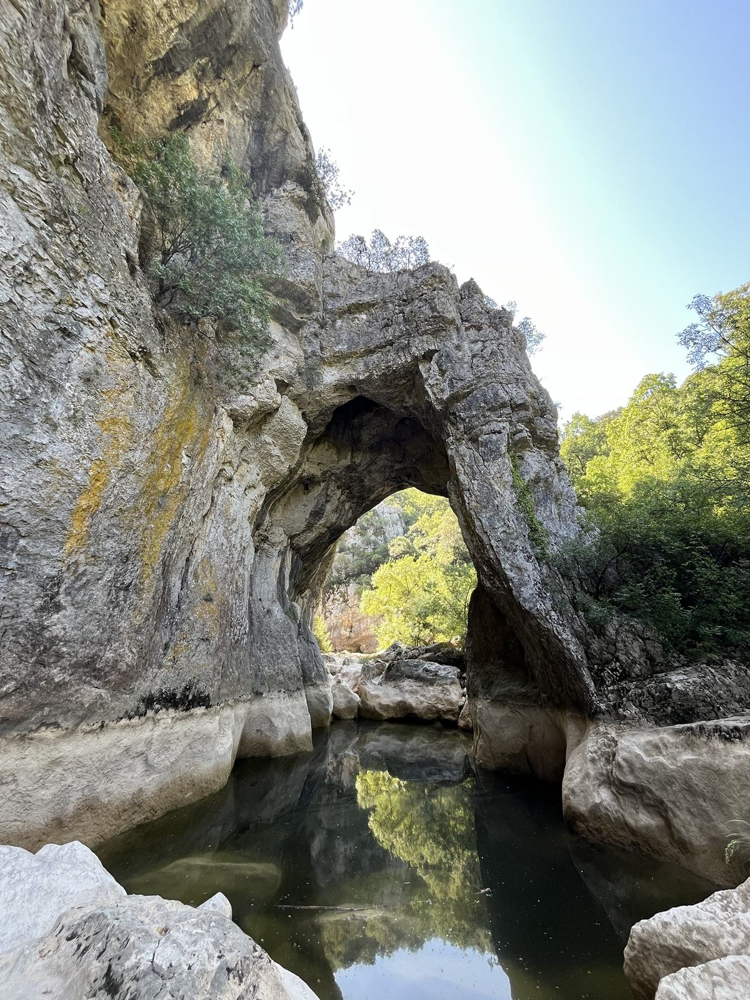
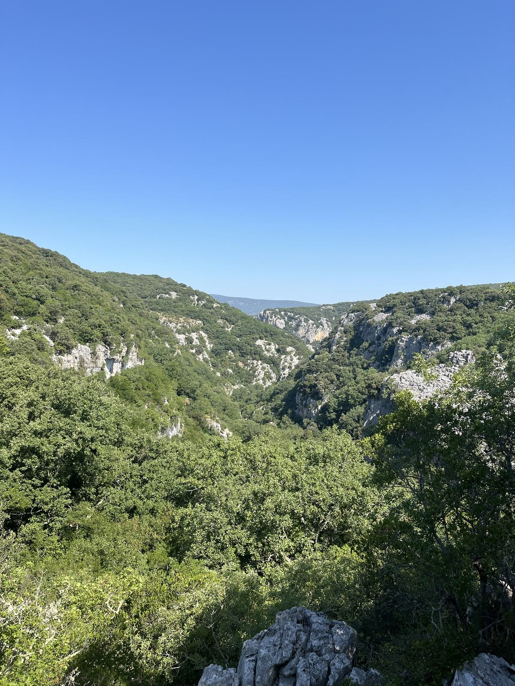

Option 1 : la boucle par les gorges du Lamalou (10 km)
📋 Fiche technique
- 🥾 Pratique : rando ou trail
- 📏 Distance : 10 km • ⬆️ 404 m D+
- 🔁 Type : boucle
- ⏱️ Rando : 3h30 à 4h • Trail : environ 1h30 (mon temps, en mode exploration)
- 📍 Départ : Notre-Dame-de-Londres [parking à préciser]
- 💪 Difficulté : [à compléter]
- 💧 Points d’eau : [à compléter]
Option 2 : l’aller-retour au ravin (4,6 km)
📋 Fiche technique
- 🥾 Pratique : rando, idéal en famille
- 📏 Distance : 4,6 km • ⬆️ 267 m D+
- 🔁 Type : aller-retour
- ⏱️ Rando : 1h30 à 2h
- 📍 Départ : Notre-Dame-de-Londres [parking à préciser]
- 💡 La bonne option quand il y a trop d’eau pour traverser le ravin : c’est ce qui nous est arrivé en mars 2025 !
🚶 Le parcours
[Débrief d’Adrien à venir : déroulé de l’itinéraire, points forts, ambiance.]
📸 En images








⚠️ Points d’attention
- Après de fortes pluies, le ravin peut être impraticable : il faut parfois traverser le lit du ruisseau.
- [Autres points d’attention à compléter]
💡 Mes conseils
- [Conseils à compléter : meilleure saison, heure de départ…]
📹 La vidéo
[Lien de la vidéo à ajouter]
🧰 Pour préparer votre sortie (points d’eau, ravitaillement…), jetez un œil à ma page Outils.